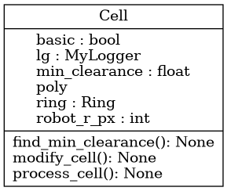
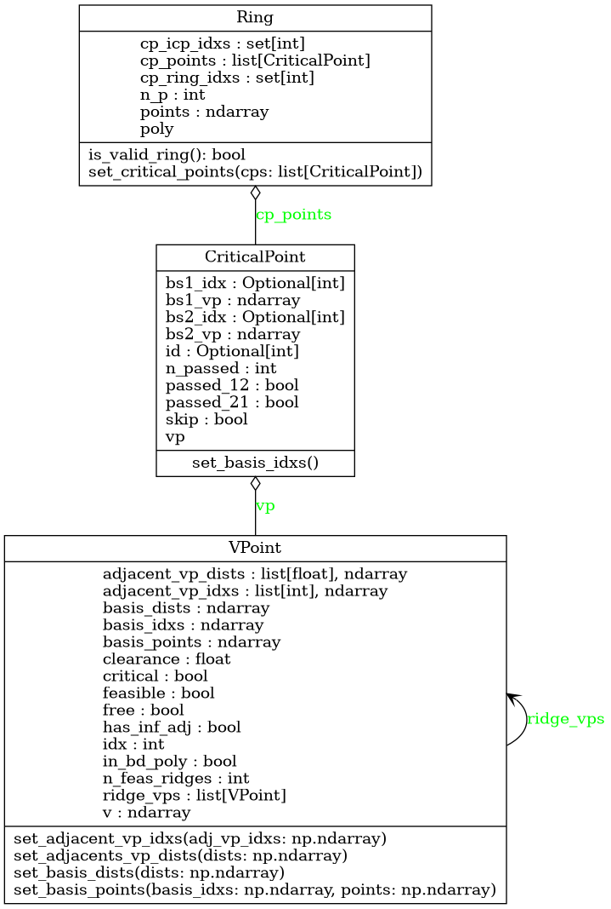
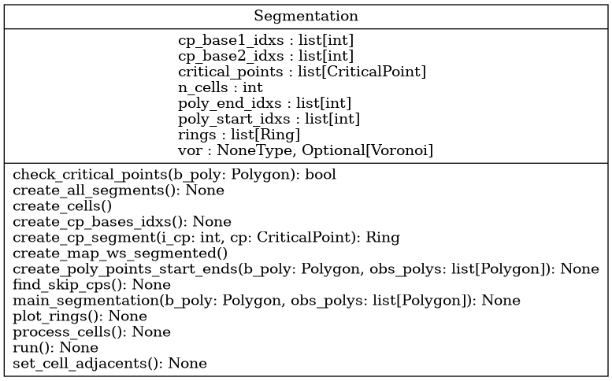
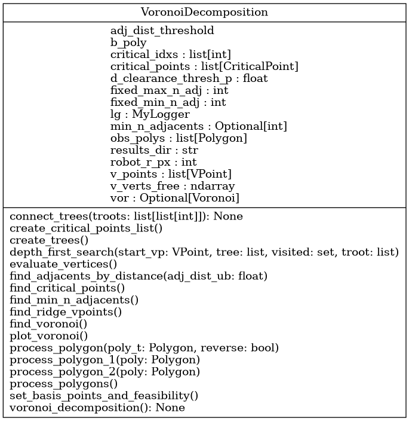
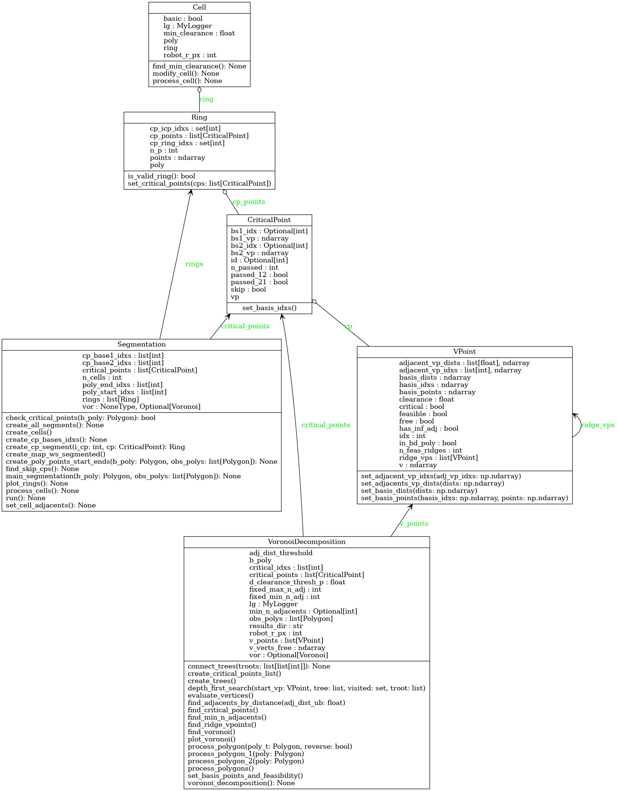

covpp.segmentation.voronoi_segmentation
Submodules
covpp.segmentation.voronoi_segmentation.cell


covpp.segmentation.voronoi_segmentation.data_structures


Common classes for Voronoi decomposition. Includes Voronoi points, critical points, and rings.
- class VPoint(v: numpy.ndarray, idx: int)
Bases:
objectVoronoi point representing a vertex in the Voronoi diagram.
- set_basis_points(basis_idxs: numpy.ndarray, points: numpy.ndarray)
Set the basis points (closest obstacle points) for the Voronoi point and calculate their distances.
- set_basis_dists(dists: numpy.ndarray)
Set the distances to the basis points and calculate the clearance.
- set_adjacent_vp_idxs(adj_vp_idxs: numpy.ndarray)
Set the indices of adjacent Voronoi points. adjacents based on the distance and min-max number of adjacents.
- set_adjacents_vp_dists(dists: numpy.ndarray)
Set the distances to adjacent Voronoi points.
- class CriticalPoint(vp: VPoint, sid: int = None)
Bases:
objectCritical point class representing a Voronoi point with additional properties.
- set_basis_idxs()
Set the basis indices and basis points from the associated Voronoi point.
- class Ring(points: list[numpy.ndarray], cp_icp_dxs: list[int], cp_ring_idxs: list[int])
Bases:
objectRing class representing a closed loop of Voronoi points containing critical points.
- is_valid_ring() bool
Check if the ring is valid (not empty and has at least one critical point).
- set_critical_points(cps: list[CriticalPoint])
Set the critical points for the ring.
covpp.segmentation.voronoi_segmentation.segmentation_voronoi


covpp.segmentation.voronoi_segmentation.voronoi_decomposition


Module contents

